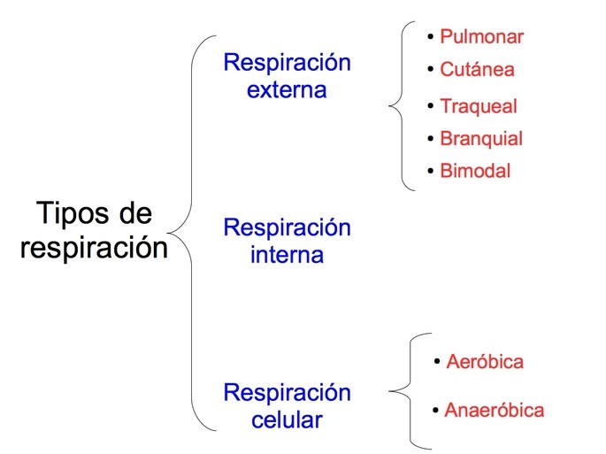
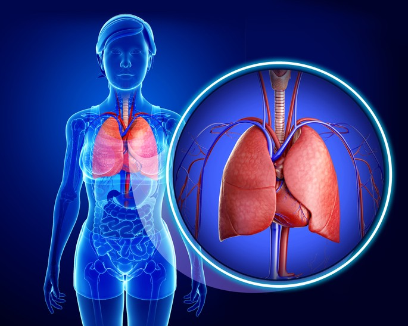
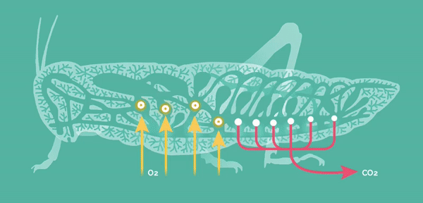

Existen diferentes tipos de respiración dependiendo de
cómo los seres vivos tomamos el oxígeno, cómo llega a las células y
cómo la célula obtiene energía de ese oxígeno.

La respiración externa es el intercambio de gases entre los animales y el medio ambiente.
Todos los animales, desde las lombrices hasta los mamíferos necesitan un mecanismo que pueda proporcionar
el oxígeno para que su cuerpo funcione.
La respiración externa puede ser de diferentes tipos dependiendo de los órganos involucrados en captar el oxígeno del ambiente.
La respiración pulmonar, también llamada ventilación pulmonar, se refiere a la entrada
y salida del aire por las vías respiratorias hasta los pulmones. Se presenta en todos
los animales mamíferos, como los seres humanos y los conejos, en las aves, los reptiles
y en los anfibios adultos.
Los pulmones son los órganos donde se realiza el intercambio de oxígeno del aire por dióxido
de carbono que se produce por el metabolismo celular.
La respiración pulmonar comprende dos procesos: inspiración y espiración. La inspiración es cuando
el aire entra y pasa por la nariz, la tráquea y los bronquios hasta llegar a los pulmones.
La espiración es cuando se expulsa el dióxido de carbono contenido en los pulmones hacia el exterior.

La respiración tegumentaria o cutánea se realiza por la capa superficial que envuelve el animal,
que vendría a ser su piel. Esta es la forma de captar oxígeno de los sapos, las salamandras,
las estrellas de mar y las lombrices.
Las lombrices tienen unas redes capilares debajo del tegumento desde donde se produce el intercambio
de gases con los espacios de aire entre las partículas del suelo.
Es importante en estos animales mantenerse en habientes húmedos, para que el oxígeno del aire
pueda penetrar al interior del cuerpo, mientras sale el dióxido de carbono.
La respiración traqueal se produce a través de una red de tubos conocida como tráquea,
que se abren en la superficie del animal. No debe confundirse con la tráquea del
sistema respiratorio humano.La tráquea se abre al exterior del cuerpo a través de
espiráculos, que usualmente tienen algún dispositivo de cierre para prevenir la pérdida de agua.
Los animales que respiran de esta forma son los insectos, los ácaros, las arañas, las garrapatas y los ciempiés.

La respiración branquial es la forma en que los peces toman el oxígeno disuelto
en el agua y expulsan el dióxido de carbono. Esto se produce en las branquias,
una estructura que se encuentra en la cabeza del pez. También los camarones,
langostas y otros crustáceos respiran a través de branquias.
Cuando el pez abre la boca, se abre la tapa de las branquias, dejando entrar el agua.
El oxígeno del agua se difunde dentro de los capilares de las branquias, al mismo tiempo
que se difunde el dióxido de carbono desde la sangre hacia el agua.
Las larvas de anfibios y algunos anfibios adultos respiran usando branquias.